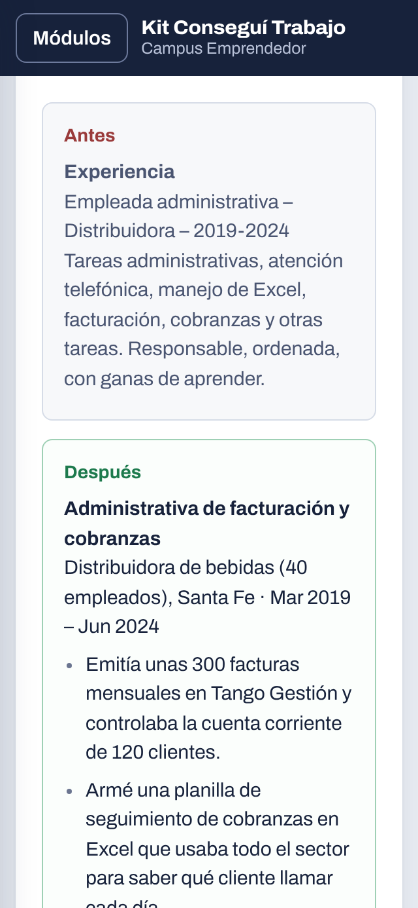

Dejá de mandar CVs que nadie lee
Un kit paso a paso para armar un CV que pase los filtros, moverte donde están los trabajos y llegar preparado a la entrevista. Pensado para buscar trabajo en Argentina, con plantillas, planillas y mensajes listos para usar.
Escribinos, pagás por transferencia y recibís el acceso al momento.
- Tareas de caja, atención y otras tareas.
- Cierre diario de caja de unos $2 millones por turno, sin diferencias en el último año.
- Armé una planilla de stock en Excel que redujo los faltantes de mercadería.
- Controlaba facturas de 12 proveedores contra remitos.
Si estás buscando trabajo, seguro te pasa algo de esto
- Mandás CVs y no te llama nadie.Y no sabés si es el CV, el aviso o mala suerte.
- No sabés qué poner.Trabajaste en negro, por tu cuenta o hiciste changas, y sentís que tu experiencia "no cuenta".
- Te piden experiencia para el primer trabajo.Y nadie te dice cómo mostrar lo que sí tenés.
- En la entrevista te quedás en blanco.Sobre todo con "contame sobre vos" o "¿cuánto pretendés?".
- Tenés más de 40 y sentís que te descartan.Antes de que alguien lea lo que sabés hacer.
- Tenés LinkedIn abandonado o ni lo tenés.Y no sabés si vale la pena.
Casi nunca es falta de capacidad. Es falta de método: un CV que se lea en segundos, estar donde te buscan y saber qué decir cuando te llaman. Eso se aprende, y es lo que trae el kit.
Un aula ordenada, no horas de videos
Entrás a tu aula online, seguís los módulos en orden y cada uno termina con algo hecho: tu CV, tu perfil, tus mensajes enviados, tus respuestas practicadas. Tu avance queda guardado.
- 7módulos en el orden en que se busca trabajo
- 4rutas según tu situación
- 14plantillas, planillas y checklists para descargar
- 31mensajes y prompts de IA listos para copiar

El programa
Pensado para hacerlo en 30 días, con una o dos horas por día. Si trabajás, a tu ritmo.
- 0
Cómo usar el kit
Tu plan de 30 días, día por día, y la ruta que te corresponde.
Te llevás: tu calendario de búsqueda - 1
Diagnóstico: qué trabajo buscar
Ordenás tu experiencia (también la informal), la convertís en logros y elegís 2 o 3 puestos objetivo.
Te llevás: tu banco de logros - 2
Un CV que pase los filtros
Cómo leen tu CV los sistemas automáticos y las personas, qué va y qué no, antes y después reales, los 15 errores que descartan y cómo adaptarlo a cada aviso en 10 minutos.
Te llevás: tu CV terminado en PDF - 3
LinkedIn y portales de empleo
Qué portal usar según tu rubro, LinkedIn paso a paso, alertas para que los avisos te lleguen solos y cómo detectar estafas.
Te llevás: perfiles activos y alertas - 4
Búsqueda activa
Los trabajos que no se publican: tu lista de 30 contactos, mensajes a conocidos y empresas, consultoras, grupos de tu zona y seguimiento.
Te llevás: tus primeros mensajes enviados - 5
Entrevistas
Las 20 preguntas más comunes con qué buscan y cómo responder, la pretensión salarial, qué preguntar al final y un simulador de entrevista con IA.
Te llevás: tus respuestas escritas y practicadas - 6
La oferta y los primeros 90 días
Cómo leer una oferta, relación de dependencia o monotributo, período de prueba, cómo negociar sin perderla y cómo quedar efectivo.
Te llevás: la checklist para evaluar ofertas
Una ruta para tu situación
No es lo mismo buscar el primer trabajo que volver al mercado después de 20 años. Cada ruta trae un CV de ejemplo, ajustes para cada módulo y las preguntas que más te van a hacer.
"Piden experiencia y nunca trabajé"
Primer empleo
Cómo mostrar estudios, changas y actividades como experiencia real, y dónde buscan los que toman gente sin experiencia.
"Siento que me descartan por la edad"
Más de 40
Un CV que muestra lo que sabés antes que tu edad, cómo usar tu red de contactos y cómo responder "estás sobrecalificado".
"En mi rubro se contrata por contacto"
Oficios
CV de una página, carpeta de trabajos con fotos y cómo presentarte en obras, empresas y corralones.
"Quiero hacer otra cosa"
Cambio de rubro
Cómo presentar experiencia de otro sector como ventaja y cómo responder "¿por qué el cambio?".
Todo lo que descargás
Archivos de Word, Excel y PDF que también se abren en Google Docs y Google Sheets.
- 3 plantillas de CVClásica, moderna y para oficios. Una columna, aptas para los filtros automáticos.
- 4 CVs de ejemplo terminadosPrimer empleo, más de 40, oficios y cambio de rubro, para ver cómo queda uno bien hecho.
- Planilla de búsquedaPlan de 30 días, banco de logros, postulaciones con alertas de seguimiento, contactos y resumen semanal.
- 2 cartas de presentaciónPara responder un aviso y para escribirle a una empresa que no publicó nada.
- Fichas de las 20 preguntasCada pregunta con lo que buscan saber y espacio para escribir tu respuesta.
- 2 checklists para imprimirAntes de la entrevista y para evaluar una oferta.
- Planilla Ordená tu plataCuántos meses te dan tus recursos mientras buscás.
- 31 textos listos para copiarMensajes para WhatsApp, LinkedIn y email, y prompts para ChatGPT, Gemini o Claude.
Y cuatro bonus para lo que preocupa mientras buscás
Ordená tu plata mientras buscás
Cuánto margen tenés, qué pagar primero y cómo estirar los meses.
Ingresos mientras buscás
Formas de generar algo de plata sin abandonar la búsqueda principal.
La IA como asistente de búsqueda
Prompts para cada etapa, con las reglas para que no invente ni suene a robot.
Rutina para no bajar los brazos
Cómo organizar la semana, medir avances y qué cambiar si no llegan llamados.
Kit Conseguí Trabajo
- Aula online con 7 módulos y 15 tareas guiadas
- 4 rutas: primer empleo, más de 40, oficios y cambio de rubro
- 3 plantillas de CV y 4 CVs de ejemplo
- Planilla de búsqueda y planilla Ordená tu plata
- 2 cartas, fichas de entrevista y 2 checklists
- 31 mensajes y prompts listos para copiar
- 4 bonus
- Acceso personal sin vencimiento, en tu celular y tu compu
Por armarte solo el CV, un servicio cobra hoy entre $10.000 y $13.500. Acá tenés todo el proceso, y lo podés usar las veces que necesites.
Cómo lo recibís
- 1
Escribinos por WhatsApp
Tocás el botón y se abre el chat con el mensaje listo.
- 2
Pagás por transferencia
Te pasamos el alias y nos mandás el comprobante.
- 3
Recibís tu acceso
Te llega el link a tu aula y tu código personal. Empezás en el momento, con todo para descargar.
Preguntas frecuentes
¿El kit me garantiza conseguir trabajo?
No, y desconfiá de quien te lo garantice. Nadie controla el mercado ni las decisiones de las empresas. Lo que hace el kit es que te presentes mucho mejor, que llegues a más lugares y que, cuando te llamen, estés preparado. Eso cambia mucho tus chances.
¿Sirve si nunca trabajé?
Sí. Tiene una ruta completa para primer empleo, con un CV de ejemplo armado sin experiencia formal y cómo mostrar estudios, changas y actividades.
¿Sirve para oficios o trabajos operativos?
Sí. Tiene una plantilla de CV para oficios, una ruta específica con la carpeta de trabajos y cómo buscar en persona, y los portales que más sirven para puestos operativos.
Tengo más de 40, ¿me sirve?
Sí. Hay una ruta para más de 40 con cómo armar el CV para que lo primero que se vea sea tu experiencia y no tu edad, y cómo responder las preguntas incómodas.
¿Lo puedo hacer desde el celular?
El aula está pensada para leerse cómoda en el celular. Para armar el CV con las plantillas te recomendamos una computadora, aunque también se puede con Google Docs en el teléfono.
¿Necesito saber mucho de computación?
No. Si sabés usar WhatsApp y abrir un archivo, alcanza. Las plantillas se completan como cualquier documento.
¿Por cuánto tiempo tengo acceso?
El acceso no vence. Podés volver al aula y a las plantillas cada vez que busques trabajo.
¿En cuántos dispositivos lo puedo usar?
Con la compra recibís un código personal que podés activar en hasta 2 dispositivos, por ejemplo tu celular y tu computadora. Si cambiás de celular, escribís LIBERAR por WhatsApp y se libera al instante.
¿Sirve en cualquier provincia?
Sí. Los portales, las estrategias y las plantillas sirven en todo el país, y el kit te indica cómo encontrar las oficinas de empleo y los grupos de tu zona.
¿Cómo pago?
Por transferencia bancaria o desde tu billetera virtual. Al escribirnos por WhatsApp te pasamos los datos.
Tu próxima entrevista empieza con un CV que se lea
Todo el método, las plantillas y los mensajes, por menos de lo que cuesta que te armen solo el CV.
Quiero el kit por $9.900Acceso inmediato después de confirmar el pago.